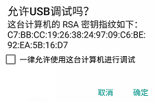
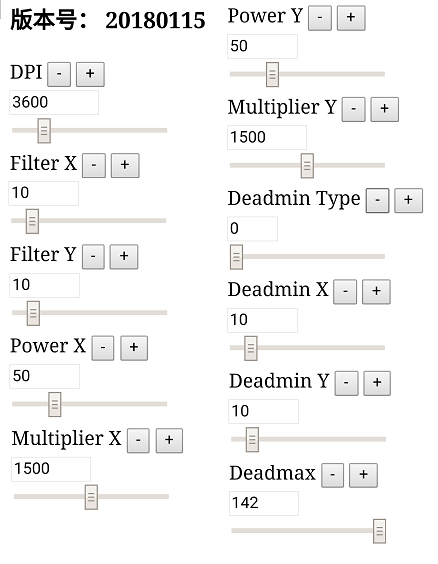

K4
Table of Contents
特别建议
N100请升级至最新5.x固件，以获得完整功能
* V5.5001
N100 Pro请升级至最新1.3001固件，以获得完整功能
* V1.3001
硬件介绍
K4是配合N100/N100 Pro使用的一款专用HUB。通过K4，N100/N100 Pro可以接收HID外设的数据，比如：键盘、鼠标、HID手柄、HID大摇杆等。
连接方式
Nintendo Switch
先把K4连上N100，再把键鼠连上K4，最后把N100连上NS主机
PS4
先把K4连上N100，再把键鼠及PS4原装手柄连上K4，最后把N100连上PS4主机
Xbox One
先把K4连上N100，再把键鼠及Xbox One原装手柄连上K4，最后把N100连上Xbox One主机
使用建议
建议不熟悉N100高级功能的玩家先使用官方或其他玩家已配置好的data.bin，以免在功能配置耽误太多时间。
功能描述
HID按键映射
完整描述请访问N100
设置实例
将鼠标左键映射到Xbox one手柄的右扳机上
1. 同时按下西瓜键 + B并松开，进入键位映射功能配置模式
2. 按一下鼠标左键
3. 按一下右扳机
4. 按一下西瓜键键，退出配置模式
HID一键连招
完整描述请访问N100
设置实例
通过键盘的R键实现手柄上长按B的效果
1. 同时按下西瓜键 + Y并松开，进入键位映射功能配置模式
2. 长按B，触发换枪操作
3. 按一下西瓜键
4. 按一下R键键，退出配置模式
鼠标参数调整
N100支持实时调整鼠标参数，但用户需要先准备一台开启了USB调试功能的安卓手机，并安装最新版本的Chrome浏览器。
USB调试
将安卓手机通过数据线连上K4，安卓手机上会弹出授权窗口，点击确定

自动打开网页
安卓手机会自动打开一个网页，如下图：

参数解释
- DPI：填入所用鼠标的DPI 当换用不同DPI的鼠标时，可以将此值进行相应调整，以获取相同体验
- Filter X：X轴平滑度，可以直接设置为10，一般不用调整
- Filter Y：Y轴平滑度，可以直接设置为10，一般不用调整
- Power X：X轴非线性灵敏度，此值越高，高速响应越灵敏
- Multiplier X：X轴线性灵敏度，此值越高，响应越灵敏，对低速移动及高速移动具有同等缩放比例效果
- Power Y：Y轴非线性灵敏度，一般情况下，可与Power X相同
- Multiplier Y：Y轴线性灵敏度，一般情况下，可与Multiplier X相同
- Deadmin Type：死区类型
- Deadmin X：X轴内死区
- Deadmax Y：Y轴内死区
- Deadmax：外死区，默认142，一般不用调整
鼠标参数调整实例
本实例以Xbox One主机下PUBG（吃鸡）游戏为例
准备工作
- 了解所用鼠标的DPI，本实例所用鼠标为G502，DPI设置为3600
- 进入PUBG的游戏设置界面，关闭震动、关闭瞄准加速（Aim Acceleration）、将各项灵敏度调整至最高（酌情降低个别项目的灵敏度，以提供后续调整空间）

参数调整
- 设置DPI为3600
- 调整Deadmin X及Deadmin Y，以缓缓移动鼠标时，瞄准准星也能缓缓变化为佳
- 尝试用鼠标左右、上下、斜上斜下直线滑动，如果瞄准准星无法直线移动，则改变Deadmin Type
- 调整Power X及Multiplier X，将Multiplier X设置为1000，调整Power X，以低速移动及高速移动鼠标时视角变化较自然为佳，然后调整Multiplier X，获得比较合手的灵敏度。
- 微调Power X及Multiplier X，（玄学调整，自由发挥）
- 调整Power Y及Multiplier Y，同Power X及Multiplier X
- 拔掉手机，保存参数